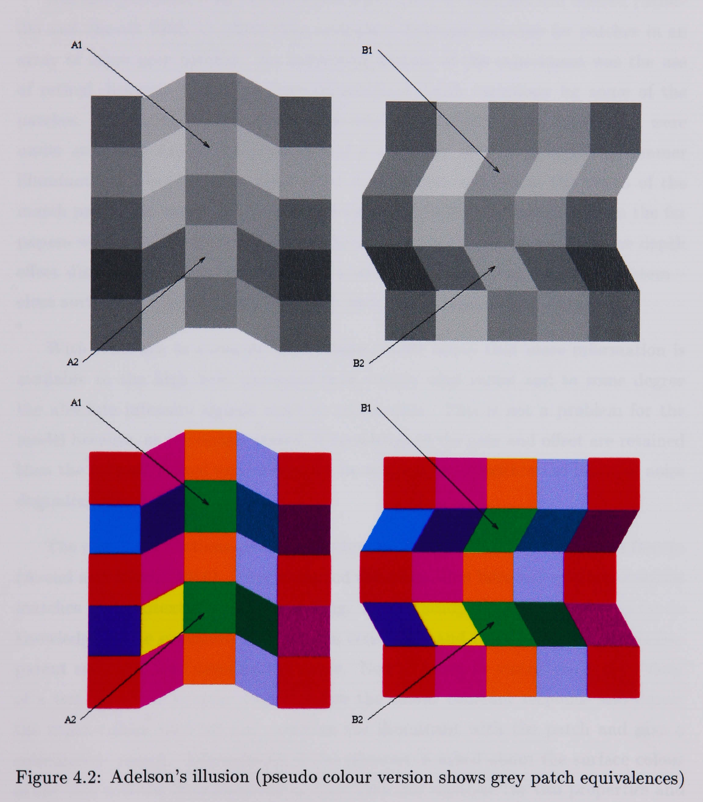

On this page I go through the influences that drove my interest in biologically inspired solutions and problems.
https://journals.physiology.org/doi/abs/10.1152/jn.1996.75.3.967
This first publication was very influential in my early career. It started out of a group project in the third year of my Engineering degree. I coded up all of the graphical elements of the network output that can be seen as the expanding circles in the paper. It was so influential because engineers were and still are taught to think in discrete algorithms or equations that can be logically followed. This biologically inspired neural model could detect objects on a collision course simply by connecting action potentials together in a simple network. In contrast, at the time and still to some degree today the standard approach was to capture an image from a sensor, threshold it, perform edge detection, combine the edges into primitive lines and shapes, try and work out what the primitives were and then try to work out what was in the scene and if it was moving and then if it was likely on a collision course. All of the processing was very complex and too slow to be of practical use and very environment, scene content and illumination dependent.
The first revelation was that the locust solution didn’t ‘care’ what the object was, only that something was on an intercept course. I was impressed that such a solution existed and that it was beyond what I had ever conceived as a potential solution at the time. I worked on the simulation as a summer intern and the research has been adapted into collision systems in follow on research performed by Claire most notably the 2016 Scientific reports paper where the output of the original simulation can be seen.
Claire has taken the work further and lots of interesting aspects are covered here.
It is this taste of biological solutions to engineering problems that led me to undertake my PhD in the physiology department in the medical school on how humans perceive ‘Colour Constancy in Simple and Complex Scenes’.
“Colour constancy is defined as the ability to perceive the surface colours of objects within scenes as approximately constant through changes in scene illumination. Colour constancy in real life functions so seamlessly that most people do not realise that the colour of the light emanating from an object can change markedly throughout the day. Constancy measurements made in simple scenes constructed from flat coloured patches do not produce constancy of this high degree. The question that must be asked is: what are the features of everyday scenes that improve constancy?”
Many people are impressed by computers performing tasks we class as difficult, playing chess for example, but it may be the tasks that we seem to find effortless that provide by far the greatest challenge. The human visual capabilities are some of the most impressive capabilities of any system. Our eyes are not cameras, our eyes provide input but the real richness in what we see comes from an interpretation out brain constructs. No computer system currently comes close to our abilities.
This following picture is my favourite from my PhD work and shows the seamless process of human versus ‘camera’.
It was created by taking a picture of the same group of objects under ‘overcast day’ and ‘incandescent’ lighting and putting the banana from the overcast day into the other picture. It shows the physical ‘truth’ of the light entering the eye from the object under the different conditions. We don’t see blue bananas on overcast days because we have ‘colour constancy’.
A proportion of the compensation is done in the photo receptors in the eye which is somewhat equivalent to adjusting white balance in a camera but our visual system does more. This illusion created by Adelson shows how scene interpretation can have a large effect.

Patches A1, A2 and B1 and B2 are identical but the scene changes our perception of them.
There is a video of the illusion that makes it clearer and almost like a magic show. It clearly demonstrates we don’t work like cameras.
Here on an image: https://www.youtube.com/watch?v=GALLMJxLvgA
Here with a real life scene: https://www.youtube.com/watch?v=z9Sen1HTu5o
This ‘intelligence’ is far more challenging to reproduce in a machine than playing chess.
https://www.britannica.com/science/Students-t-test
“In 1908 William Sealy Gosset, an Englishman publishing under the pseudonym Student, developed the t-test and t distribution. (Gosset worked at the Guinness brewery in Dublin and found that existing statistical techniques using large samples were not useful for the small sample sizes that he encountered in his work.) The t distribution is a family of curves in which the number of degrees of freedom (the number of independent observations in the sample minus one) specifies a particular curve. As the sample size (and thus the degrees of freedom) increases, the t distribution approaches the bell shape of the standard normal distribution. In practice, for tests involving the mean of a sample of size greater than 30, the normal distribution is usually applied.”
Small sample sizes are a challenge. They become a much bigger challenge when you measure more and more variables. ’omics technologies (genomics, transciptomics, proteomics etc.) often measure thousands of variables for each sample. This revolution in data brings a whole world of new challenges that the research community is still grappling with. There are many pragmatic challenges in experiment design and machine learning from this “ill balanced” data.